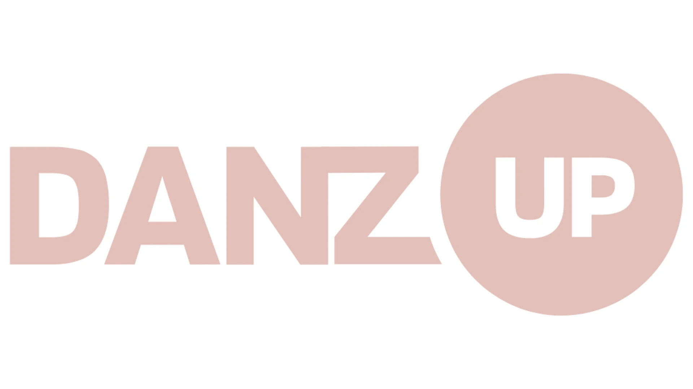

Una diretta al mese
Ogni mese una puntata in diretta su Zoom con esperti su un temi diversi. Puoi partecipare e fare domande, oppure recuperare con calma in registrazione.

Labs è la membership annuale per insegnanti e direttrici di scuole di danza. Una diretta al mese, una videoteca che cresce, e tutte le risorse pratiche degli esperti che la attraversano — dalla pedagogia ai social, dall'anatomia all'alimentazione.
Tra le ore in sala, le riunioni, la segreteria, le famiglie — il tempo per studiare è il primo che ne risente. E quando finalmente decidi di dedicarti alla formazione, davanti a te c'è una galassia di corsi, webinar, masterclass: tutti diversi, nessuno coordinato. Ne compri uno, ne segui metà, ne perdi la traccia.
Labs nasce per questo: un solo posto in cui la formazione torna ad essere continuativa, varia, e fatta da persone che sanno di cosa parlano — perché lavorano nel mondo della danza ogni giorno.
Ogni mese una puntata in diretta su Zoom con esperti su un temi diversi. Puoi partecipare e fare domande, oppure recuperare con calma in registrazione.
Tutte le puntate passate restano sulla piattaforma. Un archivio di formazione che cresce insieme a te, mese dopo mese.
Dopo ogni diretta: checklist, guide, schemi, video di approfondimento. Materiali da scaricare e usare in sala dal giorno dopo.
Non un'unica voce. Labs porta ogni mese una persona diversa: pedagogista, fisioterapista, social strategist, coach. Perché insegnare danza non è un mestiere a una dimensione.
Una lista in evoluzione, non un programma chiuso. Ogni mese una sfumatura diversa di quello che vuol dire insegnare danza nel 2026.
…e tanti altri ancora, perché il calendario continua a scriversi insieme alle persone che lo abitano.

Sonia insegna danza da oltre 40 anni. È esaminatrice internazionale per la Royal Academy of Dance e si occupa della formazione di chi insegna. Dopo aver fondato DANZ-UP nel 2021, ha pensato Labs come uno spazio diverso: non un corso suo, ma una stanza in cui invita esperte ed esperti del mondo della danza per affrontare ogni mese i temi che servono davvero a chi sta in sala.
Lei fa da regia. Le voci sono tante.
"Insegnare è un lavoro che cambia ogni anno. La formazione non può fermarsi alla scuola."
"Ho già abbastanza corsi che non finisco."
Esatto. Ed è il motivo per cui Labs non ti chiede di seguire tutto. Una diretta al mese — un'ora. Tutto il resto è lì quando ti serve davvero. Non perdi un'iscrizione: alimenti un archivio.
"I temi sono troppo diversi tra loro."
È la varietà che serve a chi insegna. La danza non vive solo di tecnica: vive di pedagogia, anatomia, social, comunicazione, alimentazione, gestione. Labs ti dà l'accesso a tutto questo senza dover cercare ogni volta il corso giusto.
"Non sono sicura di volermi impegnare per un anno."
Capito. Molti percorsi formativi chiedono ore che non hai. Labs è pensato al contrario: un appuntamento al mese, tutto il resto disponibile quando vuoi. Niente compiti, niente scadenze. La formazione ti aspetta, non ti corre dietro.
Per tutto il periodo della tua membership: ogni corso, ogni masterclass, ogni evento DANZ-UP è in promozione per te.
Il primo mese di ogni nuova iscrizione viene devoluto alla Leap of Dance Academy, una scuola di danza per bambini in difficoltà economica. La tua formazione fa anche la differenza.
"In questi giorni sono stata in trasferta per lavoro e il mattino ho iniziato le mie giornate mettendomi in pari con le video-lezioni di DANZ-UP Labs. Sonia Greco è riuscita a creare un validissimo strumento di aggiornamento e informazione che offre molti spunti di riflessione."
"Insegno danza classica da 23 anni e trovo che DANZ-UP Labs sia un'opportunità di crescita formativa del Maestro, ma soprattutto di riflesso dell'allievo, che impara, assimila ed interiorizza nuove metodologie al passo con i tempi."
"Partecipare agli incontri proposti sulla piattaforma DANZ-UP Labs è sempre stimolante. Trovo contributi interessanti ma soprattutto mi carico di una energia positiva grazie allo spirito di condivisione che rende speciale e per nulla scontato lo spazio a noi dedicato."
Come partecipo alle dirette?
Sulla piattaforma trovi il link Zoom personale per ogni puntata. Se non puoi essere in live, la registrazione resta sulla piattaforma e la puoi recuperare quando vuoi.
Cosa trovo sulla piattaforma?
Tutte le puntate passate, le risorse degli ospiti (checklist, guide, video), il calendario delle prossime dirette e l'accesso ai bonus.
Come funziona il pagamento?
La membership Labs è di 118€ all'anno, con un unico pagamento al momento dell'iscrizione. Hai così accesso a tutte le dirette, alla videoteca completa e alle risorse degli ospiti per i 12 mesi successivi.
Per chi è pensato Labs?
Per insegnanti, direttrici e direttori di scuole di danza che vogliono continuare a formarsi senza dover cercare ogni volta il corso giusto. Non servono prerequisiti: Labs è strutturato per accompagnarti, non per testarti.
Una diretta al mese · Videoteca completa · Risorse pratiche
Sconto 10% sui corsi DANZ-UP · Primo mese al progetto Nigeria
Hai domande? Scrivici su WhatsApp prima di iscriverti.